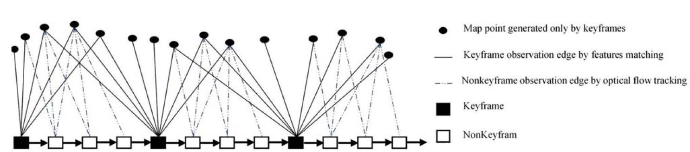
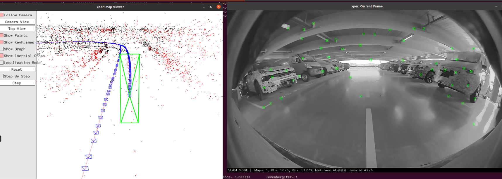
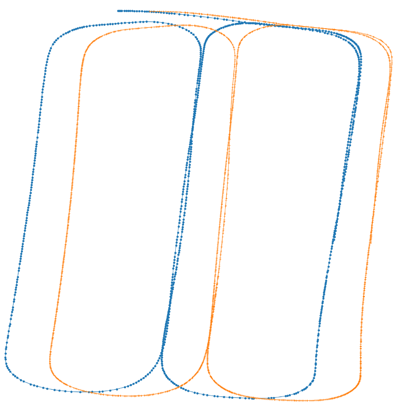
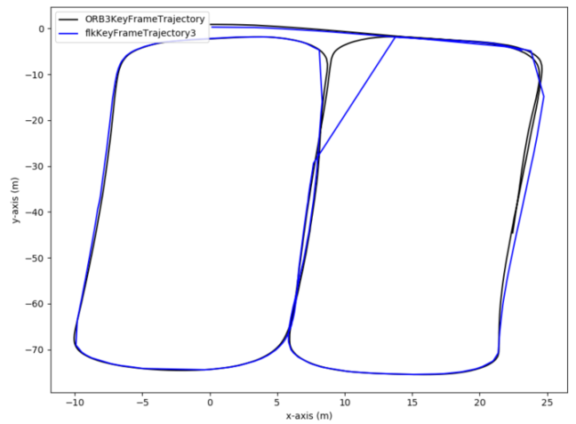
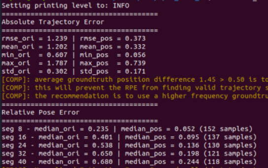
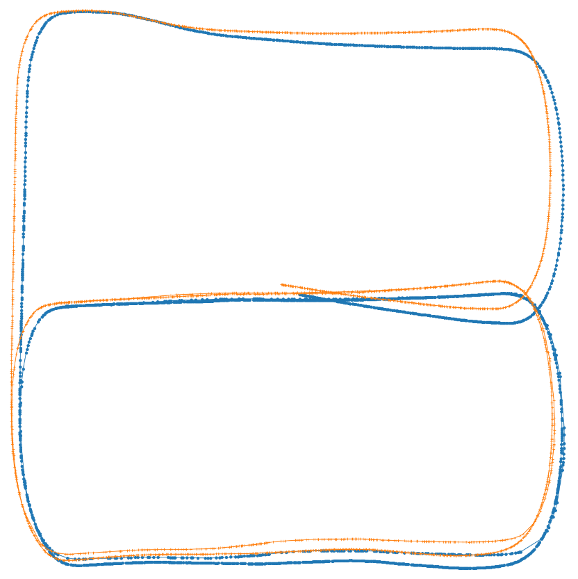
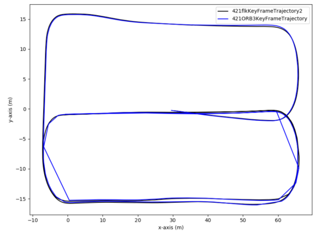
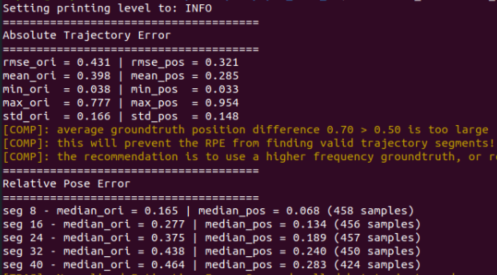

Optical Flow Report on Szh2 Parking 215
Main Idea
init stage: no difference with onboard_mapping
non-keyframe tracking (no additional feature points extraction and map points creation)
- 
given reference keyframe(KF) pose and its map points, for each non-keyframe (current frame)
predict the camera pose of non-keyframe with constant speed model or IMU prediction
project the map points of reference KF to current frame with predicted pose and identify the map points of current frame based on optical flow tracking, these map points all come from reference KF
for the next non keyframe, project the map points of its last non keyframe to current frame with predicted pose and identify the map points of current frame based on optical flow tracking, these map points all come from reference KF.
for optical flow tracking, the map points are filtered by circle-mask (like vins-mono) and each tracked candidate shall be check by epipoloar constraint.
- 
execute PnP algorithm to optimize the pose of current frame (optimization may contains IMU constraints depends on IMU init state)
Key frame Creation Timing: no big difference
mMinFrames: control the total number of KF and map points
thRefRatio: control the total number of KF and map points
add near point checking, if there is not enough near points, an new keyframe shall be created.
Key frame Creation
extract the ORB feature and its descriptor of current frame
project the map points from local map to current frame
find the map points of current frame from local map by compare their BOW
if the map points for current frame is not enough, then a relocalization process will be executed
execute track local map function, to optimize the pose and map points of current frame
create new keyframe from current frame.
local mapping and loop closure no change.
Test Performance
Dataset 1:
8328C_20220318155622
Video Record:
\\bosch.com\dfsrb\DfsCN\DIV\XC\Engineering\domain\WAVE3\04_PER\05_maploc\00_dataset\optical_flow_onboardmapping\8328C_20220318155622.mp4
Trajectory Comparison:
Keyframe pose comparison between ORB3(orange) and Optical Flow(blue). Left figure is not aligned, right figure below is aligned(ORB3 is GT).
Tips:
since the timestamp of keyframe between ORB3 and optical flow is not matched well, the aligned trajectory of right figure is not smooth → issue of evaluation tooling.
 
Absolute Trajectory Error(ATE) and Relative Error(RE)
In general, the performance of optical flow is quite similar as ORB3.

Based on this fine-tuned version, it will generate less KF and map points which will improve the total computation speed under same accuracy performance.
Total image: 8988
|
|
Key Frame Total Count |
Map Points Total Count |
|
ORB3 |
2103 |
65304 |
|
FLK |
833 |
22324 |
Dataset2:
7185C_20220421110011
Video Record:
\\bosch.com\dfsrb\DfsCN\DIV\XC\Engineering\domain\WAVE3\04_PER\05_maploc\00_dataset\optical_flow_onboardmapping\7185C_20220421110011.mp4
Trajectory Comparison:
Keyframe pose comparison between ORB3(orange) and Optical Flow(blue). Left figure is not aligned, right figure below is aligned(ORB3 is GT).
Tips:
since the timestamp of keyframe between ORB3 and optical flow is not matched well, the aligned trajectory of right figure is not smooth → issue of evaluation tooling.
 
Absolute Trajectory Error(ATE) and Relative Error(RE)
In general, the performance of optical flow is quite similar as ORB3.

Based on this fine-tuned version, it will generate less KF and map points which will improve the total computation speed under same accuracy performance.
Total image: 9046
|
|
Key Frame Total Count |
Map Points Total Count |
|
ORB3 |
2370 |
73905 |
|
FLK |
1886 |
54082 |